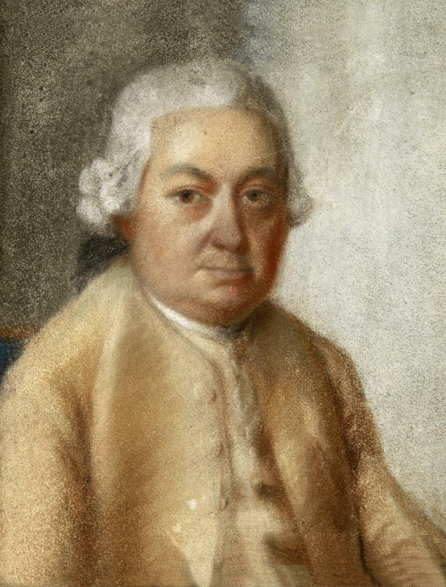

Carl Philipp Emanuel Bach

Born in Weimar with Telemann for a godfather, trained entirely in the family school, and for thirty years the harpsichordist Frederick the Great heard nightly — Emanuel became what his father never was: famous. His Essay on the True Art of Playing Keyboard Instruments (1753) taught Haydn, Mozart, and Beethoven's teachers; his "sensitive style" — impassioned, unpredictable, melody-first — was precisely the modern manner that eclipsed the paternal counterpoint. Succeeding Telemann at Hamburg in 1768, he died in 1788 as Europe's revered "Hamburg Bach."
For this timeline he matters threefold. As witness: co-author of the 1754 Obituary and Forkel's chief informant — most of what tradition "knows" about Bach passed through Emanuel's pen, with a son's loyalty and a son's editing. As archivist: the heir who kept his share (Passions, the Mass), catalogued it, and even mounted the Credo in 1786 — without him, Arc II has no manuscripts to revive. And as the eclipse personified: the gifted son whose modern success defined the very taste that filed his father under the past — and who spent his last years, all the same, guarding the old man's papers. Filial ambivalence, custodially resolved: the whole second arc, in one biography.
Wolff, The Learned Musician
The Obituary (Nekrolog), 1754 — co-authored by C.P.E.
→ full bibliography & links